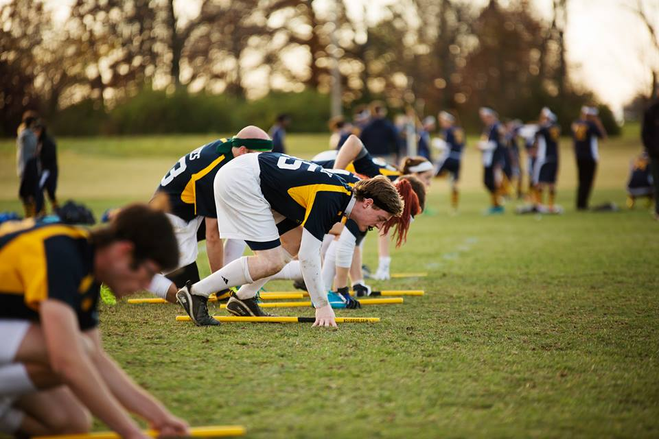
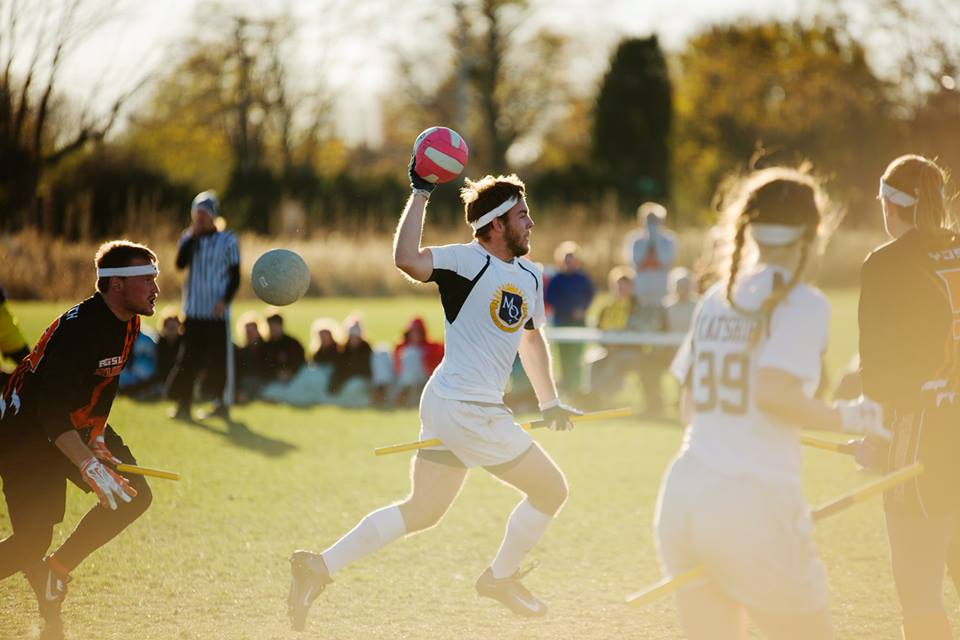
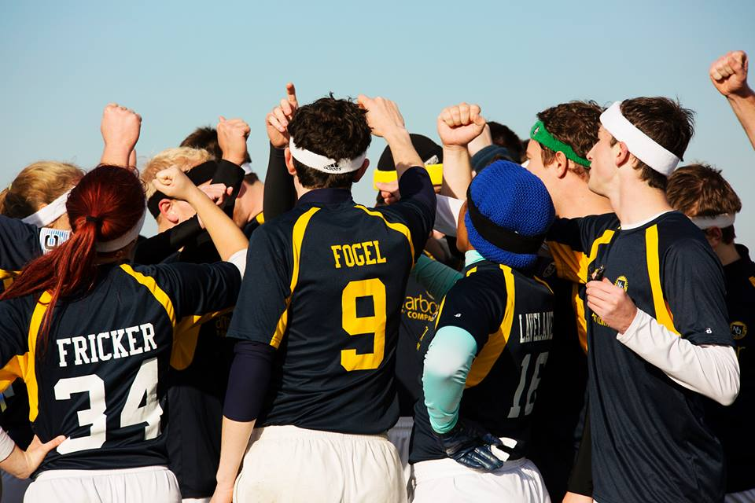

- 
- 
- 
Pinterest lomo leggings, you probably haven't heard of them Austin esse brunch shoreditch consequat voluptate occaecat ethical gluten-free anim skateboard. Shoreditch placeat lomo veniam, wolf narwhal polaroid velit biodiesel synth yr cred helvetica mollit. Quinoa proident direct trade Austin mixtape. Non irony incididunt, aesthetic pitchfork readymade farm-to-table etsy in umami cupidatat you probably haven't heard of them accusamus biodiesel synth. Irony enim accusamus street art.
Like us on Facebook!
JUST SHOW UP!
We play pickup games most Sundays (as long as we don't have a major tournament coming up). The public is always welcome, but make sure to check the calendar first. Text version of how to find us. The entrance we tend to use is the one at the bottom of the hill near the Markley dorm. In order to get to our practice area, go through the peony garden until you see stairs on the right. Take those and make a right onto the path and follow it around the curve. There will be stairs in a little to the left but you should be able to see us by then! For those of you who like to use the Arb entrance on Geddes, go right as soon as you pass through the gate and follow path that all the way down until you see a field. Hopefully you'll see or hear us by then, but we practice right over the hill.
WHAT YOU NEED:
All you need is yourself and a fierce will to play. Bringing your own broom is encouraged but not required, as we have spares. Water isn’t a bad idea, either!
9.16.12
Tryouts! More information will follow as the date approaches! 1pm will be a safe bet though.
9.9.12
Our mass meeting at 1pm in the Kuenzel room of the League! We'll be going to the Arb directly after for a pickup game with the team!
9.6.12
Festifall on the diag! This is your first official chance to get information, so come on out, say hi to us!